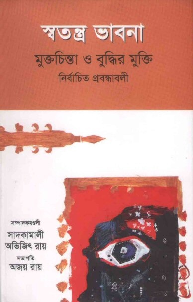
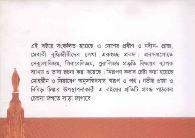

স্বতন্ত্র ভাবনা
- বাঙালী ফ্রিথিঙ্কারদের একটি সাহসী সঙ্কলন

ফ্রান্সিস বেকনের স্মরনীয় উক্তি -'কিছু বই আছে কেবল চেখে দেখার জন্য,
কিছু বই আছে গলাধঃকরনের জন্য আর কিছু বই আছে একেবারে চিবিয়ে খেয়ে
ফেলবার জন্য' - আমাদের জন্য দিনের আলোর মত স্বচ্ছ হয়ে উঠে যখন
বাংলাদেশের স্বনামখ্যাত প্রগতিশীল মুক্তমনা বুদ্ধিজীবি, লেখক,
সাহিত্যিক, বিজ্ঞানী, দার্শনিকেরা পাঠকদের জন্য উজার করে দেন নিজ নিজ
ভাবনার জগৎ।
২০০৮ সালে বই মেলায় প্রকাশিত
'স্বতন্ত্র ভাবনা' বইটি
মুক্তমনা-লেখকদের নির্বাচিত প্রবন্ধের একটি
সংকলন। অন্ধ বিশ্বাস, ধর্মীয় মৌলবাদ, কুপমুন্ডুকতা, প্রতিক্রিয়াশিলতা,
আলৌকিকতা ও কুসংস্কারকে উসকে দেওয়া নিবর্তনমূলক ধ্যান ধারণার বিপরীতে
মুক্তমনার (www.mukto-mona.com)
যে আদর্শিক সংগ্রাম শুরু হয়েছিল আজ থেকে বছর পাঁচেক আগে, এ বইয়ের
লেখাগুলো তারই নিদর্শন বহন করছে। প্রচলিত ধ্যান ধারণার গডডালিকা
প্রবাহে গা ভাসানো লেখা নয় এগুলো, নয় প্রচলিত বিশ্বাস এবং সিস্টেমের
আনত স্তব। এ বইটি বিশ্বাস ভাঙ্গার, নির্মোহ দৃষ্টিতে সমাজ ও ব্যক্তিকে
দেখার। সে হিসেবে এ বইয়ের লেখকদের ভাবনাগুলো স্বতন্ত্র; অনেকটাই আলাদা
সমাজে বিদ্যমান পশ্চাৎপদ
ধ্যান ধারণাগুলো থেকে। তাই এ বইয়ের নাম ‘স্বতন্ত্র ভাবনা’।
|
চারদিক (অঙ্কুর প্রকাশনী) হতে
প্রকাশিত 'স্বতন্ত্র ভাবনা' বইটি
মুক্তবুদ্ধির চর্চাকারী প্রথিতযশা বাঙালী ফ্রি-থিঙ্কারদের একটি
সুলিখিত এবং সাহসী সঙ্কলন। সময়োপযোগী অথচ দুর্লভ
এ
সঙ্কলনটির
জন্য লিখেছেন
অধ্যাপক কবীর
চৌধুরী,
ড.হুমায়ুন
আজাদ, ড. অজয় রায়,
ড.
সিরাজুল
ইসলাম চৌধুরী,
ড.
সনৎ কুমার সাহা, বশীর আল হেলাল,
হাসান আজিজুল হক,
ড.গোলাম মুরশিদ, ড.
আনিসুজ্জামান, ড. শহিদুল ইসলাম, ড. মীজান রহমান,
ড.
অভিজিৎ রায়,
জাহেদ আহমদ,
ড.
প্রদীপ দেব,
বন্যা আহমেদ, হাসান মাহমুদ (ফতেমোল্লা), হাসান-আল আবদুল্লাহ, অনন্ত
বিজয়, জাহিদ রাসেল, অপার্থিব জামান, এবং অর্ণব দত্তের মত লেখক এবং চিন্তাবিদেরা।
এছাড়াও এ বইটিতে সংযুক্ত হয়েছে কাজী আব্দুল ওদুদ, বেগম রোকেয়া, আরজ
আলী মাতুব্বর এবং ড. আহমদ শরীফের একটি করে প্রবন্ধ। সে সাথে পাঠকেরা
বোনাস হিসেবে পাচ্ছেন পাকিস্তানী মুক্তচিন্তক এবং পদার্থবিজ্ঞানী
ড.পারভেজ
আমির আলী হুডবয়, আন্তর্জাতিক খ্যাতিসম্পন্ন
বিজ্ঞানী
এবং দার্শনিক অধ্যাপক রিচার্ড ডকিন্স এবং
অধ্যাপক
ভিক্টর
স্টেঙ্গরের একটি করে প্রবন্ধের অনুবাদ (বইয়ের
সূচীপত্র দ্রষ্টব্য)
স্বতন্ত্র ভাবনা
:
মুক্তচিন্তা ও বুদ্ধির মুক্তি
সম্পাদনা
:
সাদ কামালী
এবং অভিজিৎ রায়
সভাপতি
:
অজয় রায়
প্রকাশক চারদিক
অঙ্কুর প্রকাশনী
৩৮/৪ বাংলাবাজার, ঢাকা- ১১০০
ফোন- ৭১১১০৬৯, ৯৫৬৪৭৯৯ |
যুক্তিবাদ, সংশয়বাদ, মানবতাবাদ, নাস্তিকতা কিংবা ইহজাগতিকতার মত আধুনিক
ধারনাগুলো সমাজ সচেতন মানুষের কাছে ক্রমশই জনপ্রিয় হয়ে উঠছে। কিন্তু
তবুও এ দেশের অধিকাংশ মানুষ ‘বিশ্বাস নির্ভর’ সিস্টেমের আবর্তেই বন্দি।
হাজারো প্রচলিত সংস্কার, তুক তাক, অপবিশ্বাস, ব্যক্তিপুজা আর সনাতন
দৃষ্টিভঙ্গির সাথে ইদানিং যুক্ত হয়েছে বৈজ্ঞানিক মোড়কে পুরে সুবেশিত
উপায়ে ভাববাদের পরিবেশন। আল-আশারী আর আল-গাজ্জালীর ভুতগ্রস্ত সমাজে
একটা সময়ে যে পশ্চাৎমুখী
প্রতিক্রিয়াশীল অধ্যায়ের সূচনা আজ তা মরিস বুকাইলি আর হারুন ইয়াহিয়ায়
এসে ঠেকেছে। বাংলাদেশে বেশ ক’ দশক ধরেই চলছে এক মহানির্বুদ্ধিতার খেলা;
এখানে ‘জ্ঞানের কথা’, ‘লজ্জা’ ‘নারী’র মত প্রগতিশীল বই অবলীলায় নিষিদ্ধ
করা হয় মানুষের ‘ধর্মানুভূতি’ তে আঘাত লাগবার অজুহাতে, আরজ আলী
মাতুব্বরের ‘সত্যের সন্ধান’ আর দেবী প্রসাদ চট্টোপাধ্যায়ের ‘যে গল্পের
শেষ নেই’ পড়ার অপরাধে মুক্তিযোদ্ধা ওহাবকে ‘জুতোর মালা’ পরিয়ে সারা
গ্রাম ঘোরানো হয়, তসলিমাকে দেশ থেকে নির্বাসিত করা হয়, মুক্ত বুদ্ধির
চর্চা করার জন্য আহমেদ শরীফ-আলী আসগর-কবীর চৌধুরী, শামসুর রাহমানদের
‘মুরতাদ’ ঘোষনা করা হয়, ডঃ হূমায়ুন আজাদকে চাপাতির আঘতে ক্ষতবিক্ষত হতে
হয়; ইনকিলাব, নয়াদিগন্ত এবং সংগ্রামগোষ্ঠির পক্ষ থেকে ধমক আর হুমকি
ধামকি দেওয়া হয় ড.
অজয় রায়, হাসান আজিজুল হক, জাফর ইকবাল সহ
অন্যান্য মুক্তমনা লেখকদের তাদের মুক্তবুদ্ধির স্যেকুলার মতবাদ পোষনের
জন্য। আর অপরপক্ষে সরকারী পৃষ্ঠপোষকতায় ইসলামিক ফাউন্ডশন
থেকে বের করা হয় ‘Scientific
Identification in Holy
Quran’
এর মত ছদ্ম-বিজ্ঞানময় গ্রন্থ। ভক্তি-রসের বান ডেকে অদৃষ্টবাদ আর
অলৌকিকত্বের রমরমা বাজার তৈরী করতে চলছে বুকাইলী-মুর-দানিকেনদের বইয়ের
ব্যাপক প্রচার আর প্রসার। বাংলাদেশের সারা বাজার এখন ‘আল-কোরাণ এক মহা
বিজ্ঞান’, ‘মহাকাশ ও কোরাণের চ্যালেঞ্জ’, ‘বিজ্ঞান না কোরাণ’, ‘বিজ্ঞান
ও আল কোরাণ’ জাতীয় ছদ্ম-বৈজ্ঞানিক বই এ সয়লাব। মুক্ত মনার এক বছর
পূর্তি উপলক্ষে ঢাকা বিশ্ববিদ্যালয়ের অধ্যাপক ডঃ অজয় রায় তার ‘বিজ্ঞান
মনস্কতা ও বিজ্ঞান মনস্ক সমাজ নির্মান’ নামক একটি নিরিক্ষাধর্মী
প্রবন্ধে লিখেছিলেন,
‘জ্ঞানের একমাত্র উৎস
যদি পবিত্র ধর্মগ্রন্থগুলি হয়, তাহলে সেই সমাজে নেমে আসবে
বন্ধ্যাত্ব, সমাজ হবে জড় চেতনা-চিন্তায় আচ্ছন্ন, সৃষ্টিশীলতার
স্থান দখল করবে কুসংস্কার, মূর্খতা, কুপমন্ডুকতা আর অজ্ঞানতা।
আমাদের সমাজে দেখা যাচ্ছে কুসংস্কার আর প্রযুক্তিবিদ্যার ফসলকে
আত্মস্থ করার পারস্পরিক সহাবস্থান। বিজ্ঞানের যুক্তি চাই না, চাই
তার ফসল, পাশে থাক অন্ধবিশ্বাস আর ভাগ্যের কাছে আত্মসমর্পন। এই
সমাজেই সম্ভব - ড্রয়িং রুমে রঙ্গিন টেলিভিশন সেট স্থাপন, এবং
হিস্টিরিয়া-আক্রান্ত কন্যাকে পীরের চিকিৎসা
কেন্দ্রে প্রেরণ। এই সমাজেই সম্ভব- অনুরসায়নবিদদের রসায়ন চর্চার
পাশাপাশি তথাকথিত পীরের পদচুম্বন।’
সত্য কথা বলবার বিপদ
আনেক। আজকের বাংলাদেশে তো এটি আরো প্রকটভাবে সত্য। তসলিমা নাসরিন,
হুমায়ুন আজাদ কিংবা আহমেদ শরীফদের পরিণতি দেখলেই তা বোঝা যায়। হ্যা,
প্রতিক্রিয়াশীলদের এবং তাদের ধ্বংসাত্মক কাজকর্মকে ভয় পাওয়ার যথেষ্ট
করাণ আছে। শায়খ আবদুর রহমান আর বাংলা ভাইদের বিগত জামানায় জননিরাপত্তা
কত নীচে নেমে গিয়েছিল আমরা সবাই তা জানি। তারপরও জগৎ
জুড়ে চিন্তাশীল ব্যক্তিরা স্বাধীন ভাবে তাদের মত ও বক্তব্য প্রকাশ করতে
চান; স্বাধীনভাবে মুক্তবুদ্ধির চর্চা করতে দ্বিধান্নিত হন না। তাদের
সেই বিবেকের তাগিদই প্রকাশ পেয়েছে প্রাচীন গ্রীক কবি ইউরিপিডিসের (৪৮০
-৪০৬ খ্রী.পূ) একটি বাণীতে :
'সত্য
কথা কাপুরুষের মত মিন মিন করে বোল না, বরং সবাইকে উচ্চস্বরে তা শুনিয়ে
দাও' । চিন্তারাজিকে লুকিয়ে রাখার মধ্যে কোন মাহাত্ম্য নেই।
চিন্তারাজিকে প্রকাশ করতে যদি লজ্জাবোধ হয়, তবে সে ধরণের চিন্তা না
করাই বোধ হয় ভাল।

‘চিন্তার দাসত্ব'-এর ক্ষেত্রে কেবল মৌলবাদীদের একচ্ছত্র আধিপত্য তা
ভেবে নিলে কিন্তু ভুল হবে। ভ্রান্ত চিন্তা, কুপমুন্ডুকতা আর
অন্ধবিশ্বাস কুড়ে কুড়ে খাচ্ছে আজকের বাংলাদেশের তথাকথিত প্রগতিশীল
নামধারী বুদ্ধিজীবী সমাজকেও। কার্ল মার্ক্স, স্বামী বিবেকানন্দ, শ্রী
রামকৃষ্ণ, মাদার টেরেসা, শেখ মুজিবুর রহমান, রবীন্দ্রনাথ প্রমুখ বড় বড়
নামগুলো তৈরী করেছে ইতিমধ্যেই তৈরী করে ফেলেছে কিছু অযাচিত মিথ; জন্ম
দিয়েছে শত সহস্র স্তাবকের। এ সমস্ত মনীষীদের আনেকেই অনেক ক্ষেত্রেই
প্রগতিশীল চিন্তা করেছেন সত্যি, কিন্তু সেই সাথে আবার তৈরী করেছে কিছু
অন্ধবিশ্বাসীদের যারা মনে করেন রবীন্দ্রনাথ কিংবা স্বামী বিবেকানন্দের
বাণী মানেই অভ্রান্ত সত্যি। তাদের ‘আরাধ্য দেবতাদের’ ন্যুনতম সমালোচনাও
তাদের কাছে অসহনীয়। গনহিস্টিরিয়াগ্রস্ত এ সমস্ত স্তাবকদল বোঝে না যে,
যুক্তির কাছে ‘ব্যক্তিপূজা’র প্রাবল্য অর্থহীন। রবীন্দ্রনাথের
প্লানচেটে বিশ্বাসের ওপর প্লানচেট কিংবা আত্মার অস্তিত্ব কিংবা
অনস্তিত্ব নির্ভর করে না। রবীন্দ্রনাথের ব্রক্ষ্মসঙ্গীতের ওপর নির্ভর
করে প্রমাণিত হয় না পরম ব্রক্ষ্মের অস্তিত্ব। শুধু দার্শনিক চিন্তার
ক্ষেত্রেই নয়, কখনও কখনও রবীন্দ্রনাথ ঔপনিবেশিক ব্রিটিশ শাসকদের
প্রশস্তি করেছেন, ভেবে নিয়েছেন ব্রিটিশ শাসন ছাড়া ভারতবাসীর মুক্তি
অসম্ভব। আবার কখনও বা নারী স্বাধীনতা ও নারী মুক্তিকে অস্বীকার করে
বলেছেন, ‘প্রকৃতি বলে দিচ্ছে যে, বাইরের কাজ মেয়েরা করতে পারবে না।’।
এধরনের বিশ্বাস কিংবা মন্তব্যগুলোর কোনটিই কিন্তু রবীন্দ্রনাথের
অভ্রান্ততা তুলে ধরে না, বরং প্রমাণ করে যে চিন্তা-চেতনায়
রবীন্দ্রনাথেরও সীমাবদ্ধতা ছিলো। একজন প্রকৃত যুক্তিবাদীর দায়িত্ব
হচ্ছে ব্যক্তি পূজার উর্ধ্বে উঠে নির্মোহ দৃষ্টিতে ব্যক্তি, সমাজ ও
সভ্যতাকে বিশ্লেষণ করা।
এ সঙ্কলনের নির্বাচিত প্রবন্ধগুলোর মধ্যে কয়েকটি হচ্ছে যুক্তিবাদ
বিষয়টি নিয়ে দার্শনিক বিশ্লেষণমূলক লেখা। প্রসঙ্গক্রমে ঈশ্বরের
অস্তিত্ব-অনস্তিত্ব এবং মন্দের যুক্তি ও এসেছে। কয়েকটি প্রবন্ধে
যুক্তিবাদী দৃষ্টিতে ধর্ম, নৈতিকতা ও মানবতাকে বিশ্লেষণ করা হয়েছে।
‘ধর্ম’ যেহেতু ব্যক্তিগত ব্যাপার তাই ধর্মনিরপেক্ষ দেশে ধর্মীয় পরিচয়
জানানো জরুরি নয় বলে ধর্মনিরপেক্ষ মানবতাবাদীরা মনে করে। কিন্তু সমস্যা
হল, যারা কোন ধর্ম মানেন না তারা চাকুরী বা শিক্ষার ক্ষেত্রে কলামটা
খালি রাখতে চাইলেও অতীতে আপত্তি উঠেছে নানা জায়গায়; এমনকি অসম্পুর্ণ
বিধায় ফর্ম বাতিল করা হয়েছে। ভারতীয় মানবতাবাদী সমিতি কিভাবে চাকুরীর
ফর্মে ধর্মের জায়গায় ’মানবতা’ লিখবার আইনী অধিকার আদায় করেছে তা
লিপিবদ্ধ হয়েছে ‘মানুষের ধর্ম মানবতা’ প্রবন্ধটিতে। লেখাটি বাংলাদেশে
যারা স্যেকুলার সমাজ ব্যবস্থা চান- তাদের জন্য একটি প্রেরণা হতে পারে। নৈতিকতার উৎস
এবং ভিত্তি যে কেবল ধর্ম নয়, তা বিস্তারিতভাবে আলোচনা করা হয়েছে
‘নৈতিকতা ও ধর্ম’ নামক আরেকটি প্রবন্ধটিতে। প্রগতিশীল বিজ্ঞানী ও
দার্শনিকেরা যুগে যুগে কিভাবে ধর্মবাদীদের কোপানলে পুড়ে আগ্রাসন ও
লাঞ্ছনার স্বীকার হয়েছেন, তা তুলে ধরতে ব্রুনো এবং হাইপেশিয়ার প্রসঙ্গ
এসেছে, এদের জীবন ও অবদান নিয়ে লেখা হয়েছে দুটি প্রবন্ধ। এই লাঞ্ছনা
এবং নিপীড়ন যে কেবল অতীতের ব্যাপার ছিল না, বরং এখনও সময় ও সুযোগ পেলে
বিরুদ্ধ মতকে অবদমিত করতে প্রতিপক্ষকে ‘মুরতাদ’ আখ্যা দেওয়া হচ্ছে, তার
ভিত্তিকে চ্যালেঞ্জ করে লেখা হয়েছে ‘কে মুরতাদ’ প্রবন্ধটি। ইসলামের
সংশয়বাদী দার্শনিক ও বিজ্ঞানীদের নিয়ে রয়েছে একটি প্রবন্ধ - ‘জীবিত
ইসলামের মৃত গৌরবের কথা’। হিন্দু ধর্মের পৌরনিক আতিকথন নিয়ে লেখা হয়েছে
একটি প্রবন্ধ। শারিয়ার অমানবিকতা নিয়ে লেখা হয়েছে ‘মানবভিত্তিক সংবিধান
ও অমানবিক বিধান’। একজন বিবর্তনবাদী বিজ্ঞানীর দৃষ্টিতে ধর্মকে
বিশ্লেষন করে লেখা হয়েছে ‘ধর্মের উপযোগিতা’ প্রবন্ধটি। এছাড়া সমকামিতা,
ডারুইনিজম, ইন্টেলিজেন্ট ডিজাইন এবং ক্ল্যাসিকাল এথেন্সের নারীদের নিয়ে
রয়েছে আলাদা তিনটি প্রবন্ধ। হুমায়ুন আজাদ, আহমেদ শরীফ, কাজী আব্দুল
ওদুদ, আরজ আলী মাতুব্বর এবং বেগম রোকেয়ার মত প্রয়াত মুক্তমনা লেখকদের
একটি করে লেখাও আমরা এতে সংকলিত করেছি। আশা করছি প্রবন্ধগুলো পাঠকদের
ভালো লাগবে এবং সংকলনটি বাংলাদেশে মুক্তবুদ্ধি ও মুক্তচিন্তা প্রসারে
সাহায্য করবে এবং আমাদের এবং প্রকাশকের শ্রম সার্থক করবে
(বইয়ের
সূচীপত্র দ্রষ্টব্য)।
সম্পাদক মন্ডলী
ফেব্রুয়ারী, ২০০৮
'স্বতন্ত্র ভাবনা' সহ
মুক্তমনার অন্যান্য বইগুলো আজিজ সুপার মার্কেট সহ
ঢাকার বুকস্টলগুলোতে পাওয়া যায়।